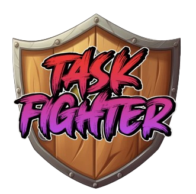
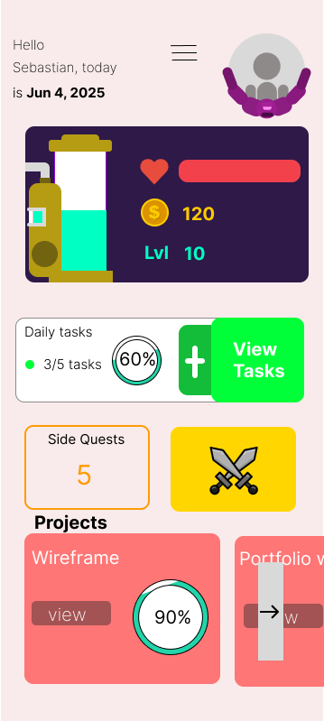
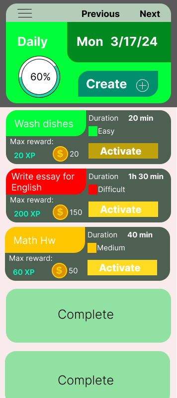
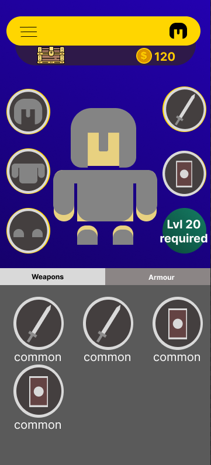

The idea to create a gamified todo-list app is very personal to me as I myself know the struggle with time management. Though I am yet to test this app with users, due to some issues I am currenly expiriencing with building out the multi-user capabilities, the system to prevent players from abusing the coin system, and ways to make people want to come back could make this app succesful in it's role of entrtaining people into managing their time. Looking to the future I want to implement AI to make it so that Taskfighter would help you organize your schedule in a way that you aren't putting too many tasks for one day or too little for another day, which could be done by gathering an individual's task completion data.